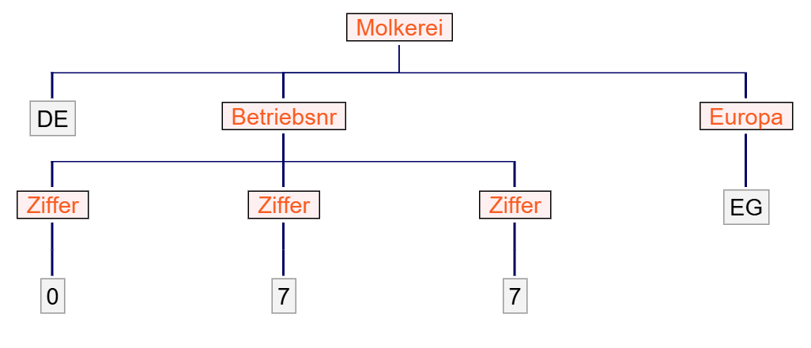

Maschinen verarbeiten Sprache nicht intuitiv, sondern benötigen klare Regeln. Um zu prüfen, ob eine Zeichenkette zur gewünschten Sprache gehört, nutzen wir sogenannte Grammatiken. Diese beschreiben, wie gültige Zeichenfolgen aus einem Startsymbol mithilfe von Ersetzungsregeln erzeugt werden können.
Was ist eine Grammatik?
Eine formale Grammatik besteht aus:
einem endlichen Alphabet von Terminalen (z. B. Ziffern, Buchstaben, Sonderzeichen)
einem Startsymbol
Nichtterminalen, die ersetzt werden können
Ersetzungsregeln, auch Produktionsregeln genannt
Das Ziel ist es, durch Anwendung der Regeln gültige Zeichenketten zu erzeugen – z. B. Bezeichner, Dateiformate oder Produktcodes.
Grundlegende Begriffe
Beispiel 1 einfach
Ausgangssituation: G = ({S}, {a, b}, P, S) mit P = { S → aS | b }. Aus S entstehen b, ab, aab, … Die Sprache ist L(G) = {anb | n ≥ 0}.
Bestandteile ablesen: N = {S}, T = {a, b}, Startsymbol S, zwei Regeln. Warum? Nur Terminale dürfen im fertigen Wort stehen.
Kürzeste Wörter erzeugen: S ⇒ b; S ⇒ aS ⇒ ab; S ⇒ aS ⇒ aaS ⇒ aab. Warum? Jede Anwendung von S → aS setzt ein a davor, S → b beendet die Ableitung.
Muster verallgemeinern: n-mal S → aS und einmal S → b ergibt anb. Warum? Andere Möglichkeiten gibt es nicht, weil in jeder Zeichenkette höchstens ein S steht.
Bestandteile ablesen: Vier Nichtterminale, 13 Terminale, Startsymbol Molkerei. „DE“, „EC“ und „EG“ sind jeweils ein Terminal. Warum? Die Regeln behandeln diese Buchstabenpaare als unteilbare Bausteine.
DE077EG ableiten (in jedem Schritt wird genau ein Nichtterminal ersetzt): Molkerei ⇒ DE Betriebsnummer Europa ⇒ DE Ziffer Ziffer Ziffer Europa ⇒ DE0 Ziffer Ziffer Europa ⇒ DE07 Ziffer Europa ⇒ DE077 Europa ⇒ DE077EG Warum? Am Ende stehen nur noch Terminale, also gehört DE077EG zu L(G).
Falle prüfen:DE77EG sieht ähnlich aus, ist aber nicht ableitbar: Betriebsnummer → Ziffer Ziffer Ziffer erzeugt immer genau drei Ziffern. Auch DE077EU scheitert, weil Europa nur „EC“ oder „EG“ liefert.
Sprache überblicken: 10 · 10 · 10 Betriebsnummern und 2 Endungen ergeben 103 · 2 = 2 000 Wörter. Warum? Die Wahlen an den einzelnen Stellen sind unabhängig voneinander.
Ergebnis: L(G) ist endlich und enthält 2 000 Kennungen von DE000EC bis DE999EG. Abb. 1 zeigt die Ableitung aus Schritt 2 als Baum.

Abb. 1: Ableitungsbaum der Zeichenkette „DE077EG“
Ein Ableitungsbaum zeigt, wie eine Zeichenkette Schritt für Schritt mithilfe der Produktionsregeln einer Grammatik aufgebaut wird. Der Baum beginnt beim Startsymbol und verzweigt sich nach jeder Regelanwendung, bis nur noch Terminalsymbole in den Blättern stehen.
Grammatiken mit FLACI testen
Mit dem kostenlosen Werkzeug FLACI kannst du formale Grammatiken interaktiv ausprobieren:
Grammatiken eingeben und als Datei speichern
Zeichenketten erzeugen und auf Gültigkeit testen
Ableitungsbäume automatisch generieren lassen
Fehlerhafte Produktionen identifizieren
So kannst du prüfen, ob deine Grammatik korrekt ist – z. B. für Emoticons, Produktnummern oder Datumsformate.
Alltag: Molkereikennung, IBAN, Autokennzeichen, ISBN oder Paketnummern folgen festen Bildungsregeln. Online-Banking lehnt eine IBAN mit falscher Länge sofort ab, noch bevor die Bank angefragt wird.
Beruf: Softwareentwicklerinnen bei Banken, Zahlungsdienstleistern oder in der Logistik beschreiben solche Formate formal und erzeugen daraus Prüfprogramme. Im Compilerbau erzeugen Parser-Generatoren (z. B. ANTLR oder Bison) aus einer Grammatik automatisch das Programm, das Quelltext auf korrekte Struktur prüft.
Die Einordnung von Grammatiken in Typen (regulär, kontextfrei …) folgt in Kapitel 6.6 „Chomsky-Hierarchie“.
Das Wichtigste
Merke: Eine formale Grammatik ist ein 4-Tupel G = (N, T, P, S) mit
N: endliche Menge der Nichtterminale (Variablen, werden ersetzt)
T: endliche Menge der Terminale (Zeichen des Alphabets, erscheinen im fertigen Wort), N ∩ T = ∅
P: endliche Menge der Produktionsregeln der Form linke Seite → rechte Seite
S: Startsymbol, wobei S ∈ N
Die von G erzeugte Sprache L(G) ist die Menge aller Wörter aus Terminalen, die sich aus S ableiten lassen: L(G) ⊆ T*.
Grundaufgaben
Aufgabe 6.3.1: Emoticon-Grammatik AFB II
Entwickle eine Grammatik, die folgende Emoticons erzeugt: :-), :-(, ;), :D, :'(, :-|
Teste deinen Entwurf in FLACI.
Aufgabe 6.3.2: IBAN-Vereinfachung AFB II
Beschreibe eine vereinfachte Grammatik für eine IBAN mit deutschem Format: Format: DEkkbbbbbbbbcccccccccc (k: Prüfziffer, b: Bankleitzahl, c: Kontonummer)